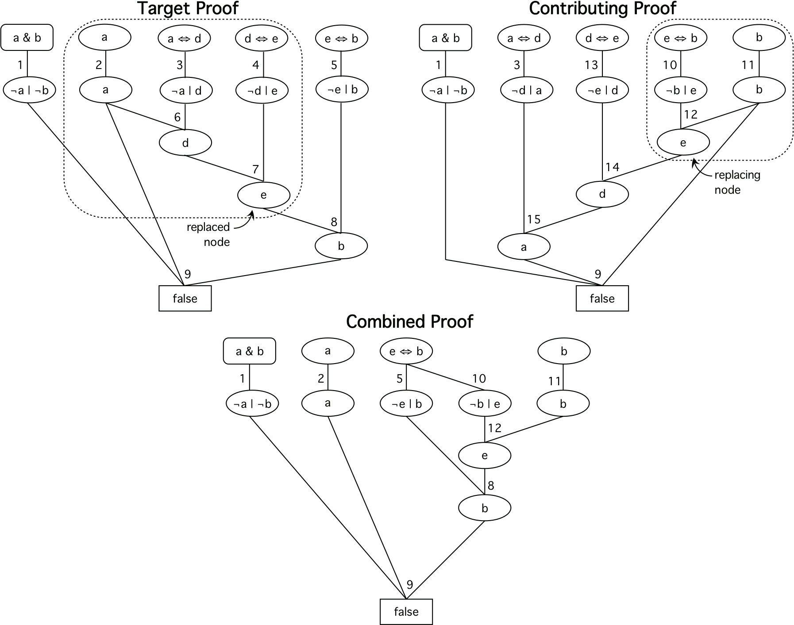

Single Combining Steps

One Step
- Select replaced node in target proof
- Find equivalent replacing node in contributing proof
- Replace sub-DAG in target proof to form combined proof
- Retain replaced nodes that are used elsewhere
- Merge duplicated leaves
Example
- Replace at e
- Retain a
- Merge e ⇔ b
Is the Combined Proof Different?
- Compare Cswα(S+Target) and
Cswα(S+Combined)
- CswLeaves(S+Target) = 0.7576
CswLeaves(S+Combined) = 0.4241